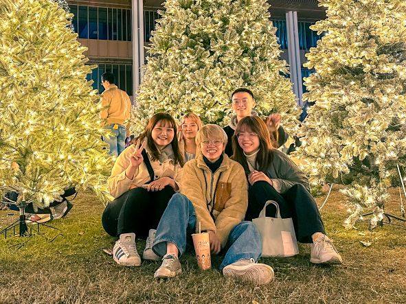

Noiya方州
組名讀作諾亞方舟，代有聰明及希望的含義。 組員們在製作新聞專題上有相同的共識， 希望可以與以往的新聞專題做出不一樣的呈現， 每位組員都能身兼多職，輪流擔任不同職位， 在製作專題上互相協助配合！

組名讀作諾亞方舟，代有聰明及希望的含義。 組員們在製作新聞專題上有相同的共識， 希望可以與以往的新聞專題做出不一樣的呈現， 每位組員都能身兼多職，輪流擔任不同職位， 在製作專題上互相協助配合！